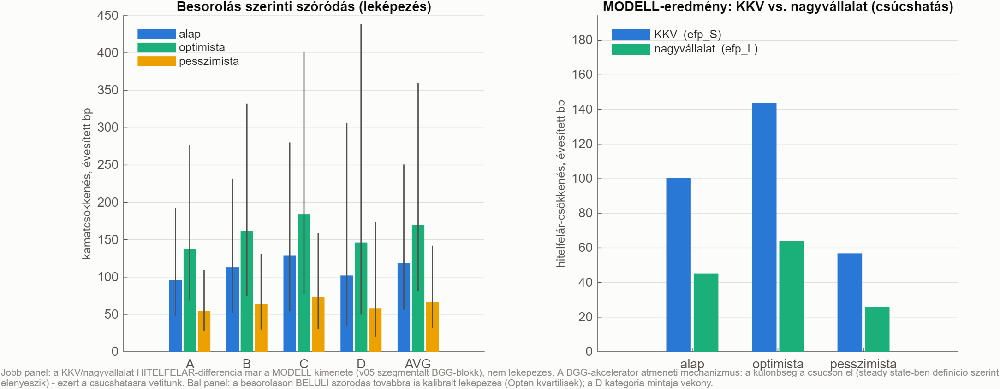
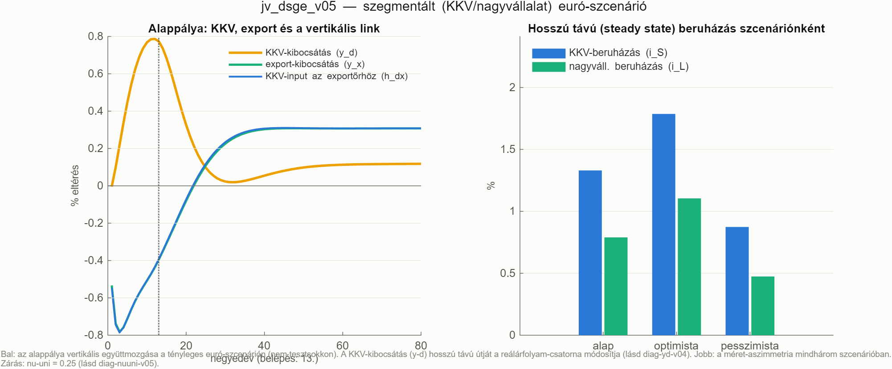
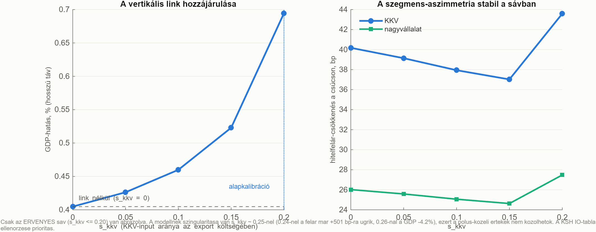

Modell-dokumentáció · euró/KKV DSGE · belső
A KKV/nagyvállalat layer önmagában csak azt mutatta meg, hogy a mechanizmus működik. A v05 ezt ráülteti a tényleges euró-belépési pályára — innentől a modell a projekt valódi kérdésére válaszol: mennyit nyer a KKV és mennyit a nagyvállalat, ha bevezetjük az eurót?
A szuverén és banki prémium-csökkenés szegmensenként eltérő súllyal lép be a modellbe, a belépéskor kamatunió-rezsimváltás történik, és mindez anticipált pályaként fut — az eredmény: a KKV hitelfelára 44 bp-tal javul a nagyvállalat 28 bp-jával szemben, és a vertikális link a teljes GDP-hatás 42%-át adja.
A projektben két réteg épült egymástól függetlenül, és volt köztük egy rés — a v05 ezt zárja be.
Fontos, hogy ez nem új mechanizmus, hanem két meglévő réteg összekapcsolása. A v04 vertikális linkje (költség- és mennyiségi csatorna) változatlan; a v03 szcenárió-gépezete változatlan. Az újdonság az, hogy a prémium-sokkok most szegmensenként érkeznek.
Minden változó log-eltérés a hosszú távú egyensúlytól. A prémiumok negyedéves értékek (egy 200 bázispontos éves csökkenés = 0,005 negyedéves egységben).
A v04-ben a külső finanszírozási prémium csak a cég mérlegétől függött. A v05-ben megjelenik két exogén, politikai eredetű tag is: a szuverén (állampapír-) prémium és a banki forrásköltség csökkenése — szegmensenként más súllyal:
Mit mond: ha az euró-belépés miatt az állampapír-prémium (sov) és a banki forrásköltség (bank) csökken, ez a KKV hitelfelárába 2–2,5-szer erősebben gyűrűzik be, mint a nagyvállalatiba. Miért így: a nagyvállalat amúgy is közel van a legjobb finanszírozási feltételekhez (van hitelminősítése, anyavállalati háttere, akár közvetlen tőkepiaci hozzáférése) — nála kevesebb a „lefaragható" felár. A KKV viszont épp a hazai bankrendszer árazásának van kitéve, ezért a javulás nagy részét ő élvezi. Mi lesz belőle: a méret-aszimmetria immár két forrásból jön: az endogén akcelerátorból (χ) és az exogén átgyűrűzésből (t).
Az euró-belépés nem csak árakat mozgat: megváltoztatja a monetáris politika egész szabályát. Ezt egy uni nevű kapcsolóval („dummy") oldjuk meg, ami a belépés előtt 0, utána 1:
Mit mond: a belépés előtt a jegybank saját Taylor-szabály szerint dönt a kamatról, és az árfolyam szabadon mozog (UIP). A belépés után a hazai kamat a közös euró-kamat lesz (plusz egy kis országfelár), és az árfolyam megszűnik mint önálló változó (dep = 0). Miért így: ez az euró-belépés valódi tartalma — nem „egy sokk", hanem rezsimváltás. Technikai megjegyzés: a dummy-szorzatok miatt a modell formálisan nemlineáris, ezért perfect foresight megoldóval fut (nem a szokásos linearizált módszerrel).
A prémium-csökkenés nem egyszerre robban be, hanem előre bejelentett, fokozatos pálya — és a szereplők ezt előre tudják, ezért már a bejelentéskor reagálnak:
Mit mond: a szuverén prémium már az ERM-II szakaszban (a belépés előtti 3 év) csökkenni kezd, mert a piac beárazza a konvergenciát. A banki csatorna viszont csak a belépéskor nyílik ki — addig a bankoknak fedezni kell az árfolyamkockázatot (swap-bázis), ami az euróval egy csapásra eltűnik. Miért fontos: ez a különböző időzítés magyarázza, miért van a hatás csúcsa épp a 13. negyedévben.
A v04 vertikális linkje szó szerint változatlan — ez fontos a hitelesség szempontjából (nem „hangoltuk át" a mechanizmust a szcenárióhoz):
A csúcshatás a 13. negyedévben (a belépés pillanatában) jelentkezik, mert ekkor esik egybe a szuverén konvergencia vége a banki csatorna kinyílásával.
Az alappályán a KKV hitelfelára 43,6 bázisponttal csökken, a nagyvállalaté 27,5 bp-tal — a KKV 1,6-szoros nyereséget realizál. Ez már modell-eredmény, nem utólagos leképezés.
| Szcenárió | KKV-felár (csúcs) | Nagyvállalat | KKV-többlet | GDP (h. táv) | KKV-beruh. | Nagyváll. beruh. |
|---|---|---|---|---|---|---|
| alap | −43,6 bp | −27,5 bp | 16,1 bp | +0,69% | +1,51% | +1,11% |
| optimista | −62,7 bp | −39,1 bp | 23,6 bp | +0,93% | +2,02% | +1,53% |
| pesszimista | −24,4 bp | −15,8 bp | 8,6 bp | +0,46% | +1,00% | +0,70% |
Megjegyzés a számok korábbi verziójához: egy korábbi futásban ennél nagyobb értékek szerepeltek (KKV −100 bp, nagyvállalat −45 bp). Az érzékenységi protokoll kiderítette, hogy azok egy súly-inkonzisztenciából származtak (lásd 04. pont), és a fenti, mérsékeltebb értékek a helyesek. A KKV-előny irányát és tényét a javítás nem érintette, csak a nagyságát.


Fontos a helyes értelmezéshez: a felár-differencia a csúcshatáson él, nem a hosszú távú egyensúlyban. A pénzügyi akcelerátor átmeneti mechanizmus: a nettó vagyon hosszú távon visszaáll, ezért steady state-ben a két szegmens prémiuma matematikailag azonos szintre konvergál (mindkettő ~−13 bp, tisztán az exogén átgyűrűzésből). A szegmens-különbség tehát természeténél fogva az átmeneti szakaszban él — és ott is a legfontosabb: ez a belépés körüli 3–5 év, amikor a szakpolitikai döntések születnek.
Ez a szakasz szándékosan van benne: a modellezési munka hitelessége azon áll, hogy a hibákat megtaláljuk és dokumentáljuk, nem azon, hogy elsőre minden jó.
Export +12,9%, reálárfolyam +34,7%, külső pozíció −25% GDP. Ezek egy euró-belépésnél nyilvánvalóan nem lehetnek helyes értékek — nem is fogadtuk el eredményként.
A hiba forrása egy örökölt paraméter: a külső egyensúly zárása az unió-rezsimben (νunió). A korábbi, szegmentálás nélküli verzióból egy nagyon gyenge értéket (0,01) vittünk tovább. Ez azért lett most probléma, mert a szegmentált modellben a vertikális link önerősítő kört hoz létre:
Egy ilyen kör mellett a gyenge külső horgony nem tartja meg a rendszert: a külkereskedelmi többlet és a reálárfolyam elszáll.
| νunió | GDP | Reálárfolyam | Külső pozíció | Értékelés |
|---|---|---|---|---|
| 0,01 | +4,53% | +34,7% | −25,0% | implauzibilis |
| 0,05 | +1,42% | +9,2% | −5,0% | még mindig sok |
| 0,25 | +0,80% | +4,1% | −1,0% | választott |
| 0,50 | +0,72% | +3,5% | −0,5% | alig változik |
Miért a 0,25: mert a „platón" van — a 0,25 → 0,5 lépés már alig mozdít, tehát az eredmény nem érzékeny a paraméter pontos értékére. Ha a meredek szakaszon választanánk, az önkényes lenne.
A validáció, ami megnyugtató: ha a vertikális linket kikapcsoljuk, a GDP-hatás +1,07% — ami szinte pontosan a szegmentálás nélküli korábbi modell eredménye (+1,09%). Vagyis a modell konzisztens, és a probléma kizárólag a zárás erőssége volt, nem a szegmentálás. A füstteszt mostantól regressziós védőhálót tartalmaz: ha valaki visszaállítaná a hibás értéket, a reálárfolyam-plauzibilitási teszt automatikusan elkapná.
Az skkv (az export költségének mekkora része KKV-input) és a shdv (a KKV-kibocsátás mekkora része megy az exportőrhöz) ugyanazt a kereskedelmi kapcsolatot írja le két oldalról — mégis külön-külön voltak megadva. Következmény: az alapkalibrációnál a KKV-kibocsátásnak 115%-át az export-input tag adta, ami közgazdaságilag lehetetlen.
A javítás: a shdv mostantól származtatott: shdv = skkv × (export/KKV-kibocsátás arány), a többi felhasználási súly pedig arányosan igazodik. Ezért mérséklődtek a számok (a KKV-felár −100 → −44 bp), de a mechanizmus és az irány változatlan.
Az skkv-t 0-tól felfelé végigmérve kiderült, hogy a modellnek szingularitása (pólusa) van skkv ≈ 0,25-nél:
| skkv | GDP | KKV-felár (csúcs) | Értékelés |
|---|---|---|---|
| 0,00 | +0,405% | −40,2 bp | link nélküli ellenpróba |
| 0,10 | +0,460% | −37,9 bp | sima, monoton |
| 0,20 | +0,694% | −43,6 bp | alapkalibráció (a pólus vonzásában) |
| 0,24 | +1,607% | +501 bp | pólus-közeli, nem használható |
| 0,26 | −4,247% | −509 bp | póluson túl, értelmezhetetlen |
Miért van pólus: a vertikális link kétirányú visszacsatolást hoz létre — a KKV inputot ad az exportnak, az export kereslete pedig a KKV-kibocsátás része. Elég erős linknél ez a hurok „átfordul". A megoldó egyébként mindenhol konvergál (reziduum ~10−17), tehát nem numerikus hiba, hanem szerkezeti tulajdonság. Következmény: a KSH IO-tábla ellenőrzése prioritás — ha a valódi KKV-input arány 0,20 fölött lenne, a modellt át kell strukturálni (pl. explicit CES-input-aggregátorral, ami nem hoz be pólushoz vezető hurkot).

A v05 nem csak eredményt ad, hanem átrendezi a rétegek közti munkamegosztást — és ez módszertani előrelépés.
A v05-höz szükséges fogalmak — a szegmentálási layer fogalomtárát egészíti ki (nem ismétli).
sovbanktsov, tbankuniνunió